Claude Code /powerup 教程：18 个官方互动课程全解析
大家好，我是小林。
最近有林友问我：「小林，Claude Code 我已经装好了，但打开终端之后一脸懵，不知道从哪里开始学，有没有什么系统的学习方式？」
说实话，这个问题我之前也很难回答。因为 Claude Code 的功能太多了，光斜杠命令就有几十个，快捷键、配置文件、子代理、MCP 扩展……
但现在不一样了。
Claude Code 在 v2.1.90 版本（2026 年 4 月 1 日发布）里悄悄上线了一个新命令：/powerup。
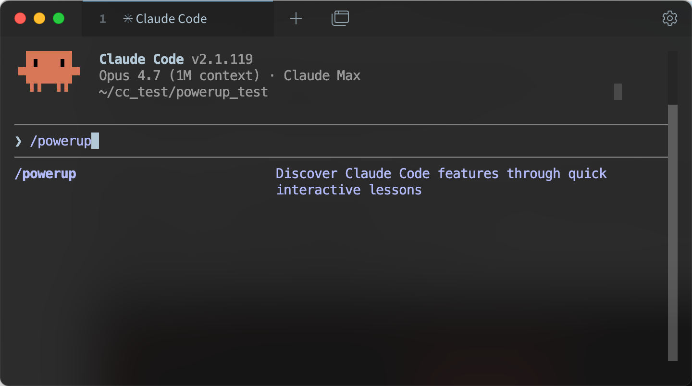
这个命令不是什么花里胡哨的功能，而是官方直接在你的终端里内置了一套交互式教程，总共 10 个课程，每个课程都带动画演示，手把手教你怎么用 Claude Code。
换句话说，Anthropic 官方帮你把「从零开始学 Claude Code」这件事给安排得明明白白的。
今天这篇文章，小林就带大家一起来体验一下这个 /powerup 命令，把它的 10 个课程逐个过一遍，让你看完之后，对 Claude Code 的核心操作有一个完整的认知。
每个课程打卡学习完成之后，进度就 100%了。
废话不多说，咱们开干！
先确认你的版本
/powerup 是 v2.1.90+ 才新增的命令，如果你的版本太旧，是看不到这个命令的。
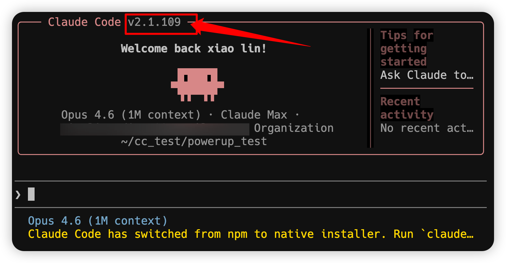
怎么查版本？在终端里输入：
claude --version
如果版本号低于 2.1.90，就需要先升级：
npm update -g @anthropic-ai/claude-code
升级完再确认一下版本号，确保是 2.1.90 或更高就行了。
好，版本没问题之后，我们直接进入正题。
打开 /powerup
在终端里启动 Claude Code：
claude
然后在 Claude Code 的输入框里输入：
/powerup
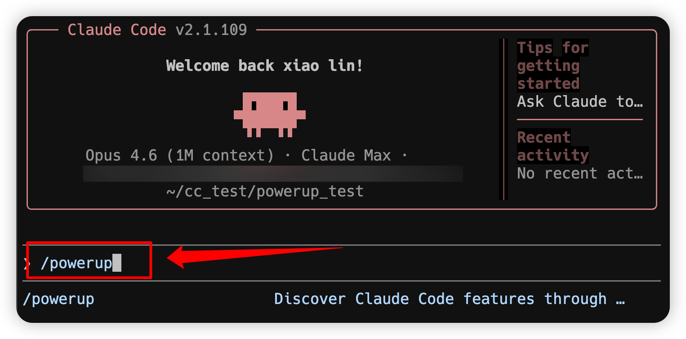
你会看到这样一个界面：
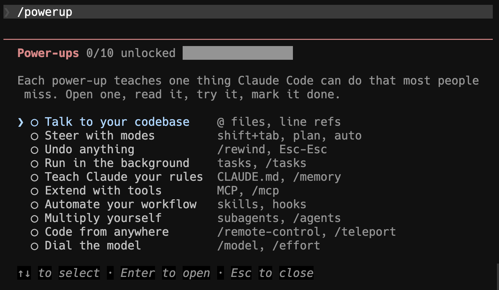
看英文困难的同学也不怕， 我也针对上面页面的内容，做了一个翻译：
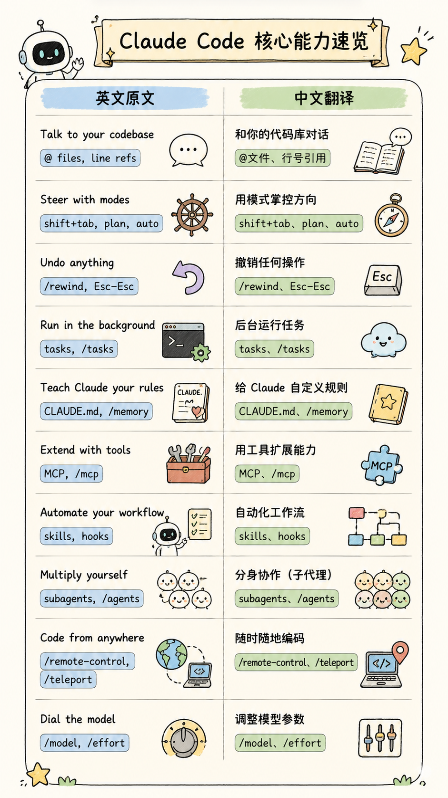
你看，一共 10 个课程，每类都标注了对应的核心命令或操作。右上角还有进度条，每完成一个课程就会解锁一格，有点像打游戏过关的感觉。
你可以用上下方向键选择课程，按回车进入。每个课程会先展示一段文字说明，然后播放一段动画演示，告诉你这个功能怎么用。
接下来，小林就按顺序，把这 10 大类课程涉及的知识点，一个一个给大家讲清楚。
01｜Talk to your codebase：与代码库对话
第一个课程，教你最基本也是最高频的操作：怎么让 Claude「看到」你的代码。
你可能会想，Claude Code 不是已经打开了吗？它不就能看到我的代码了吗？
嗯，能是能，但问题是，Claude Code 看到的是你整个项目的所有文件。如果你不说清楚让它看哪里，它就得自己一个文件一个文件地翻，翻着翻着，就把上下文窗口给吃满了，后面做事就容易「犯迷糊」。
所以，更好的做法是：你主动告诉它该看哪个文件。
怎么告诉它？用 @ 符号。
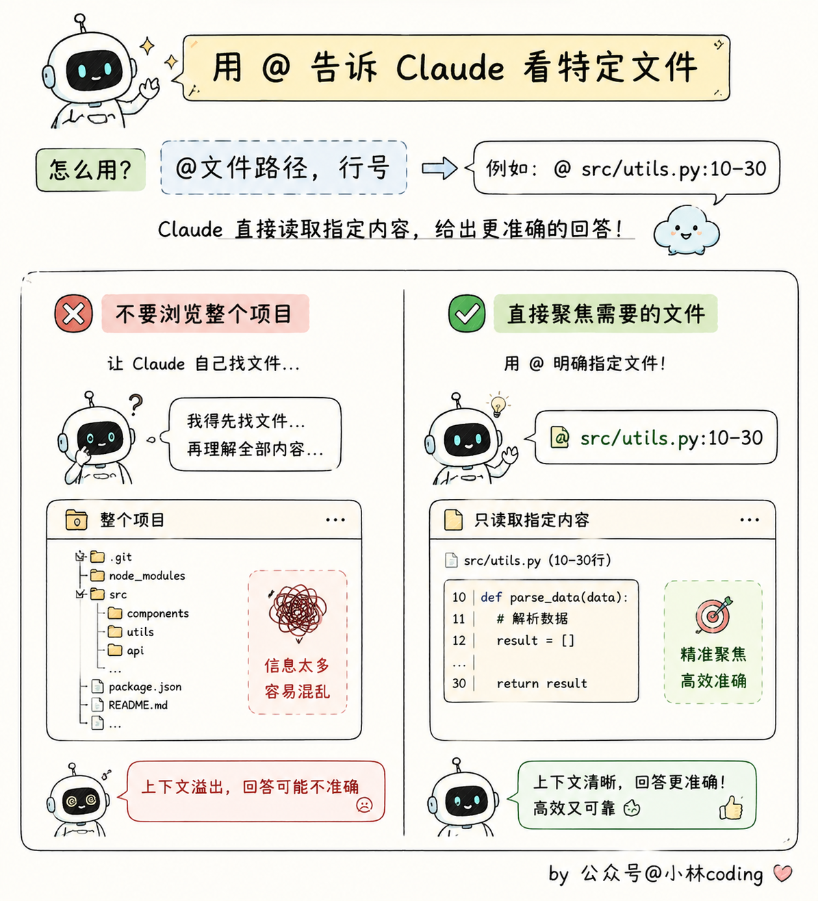
进入第一个课程，claude 就是在教你这个事情。
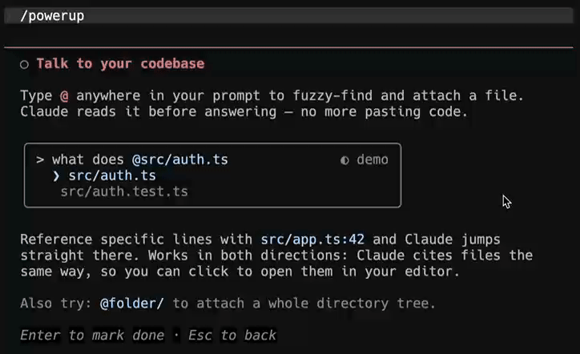
如果你确定明白了，输入回车就代表掌握了，然后如果想回到命令页面，就输入 ESC 键退出 /powerup 命令的页面就行。
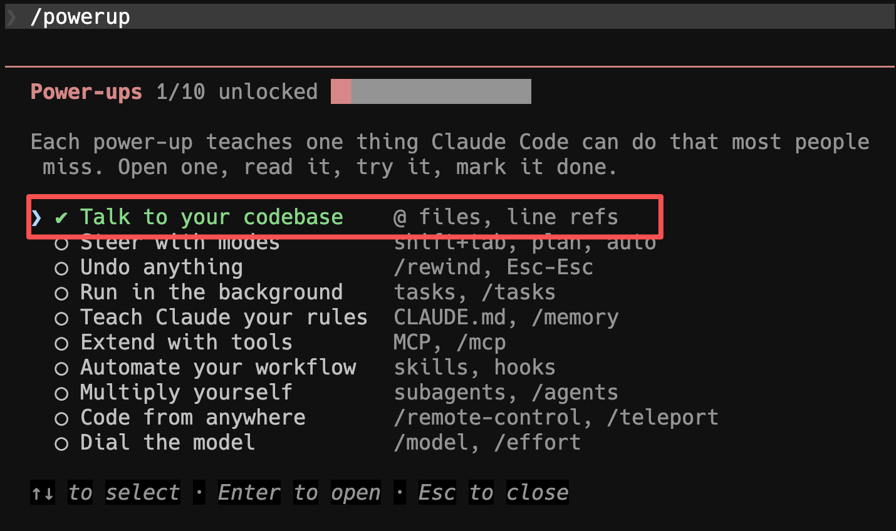
@ 引用文件
在输入框里，你可以直接用 @ 来引用文件或目录：
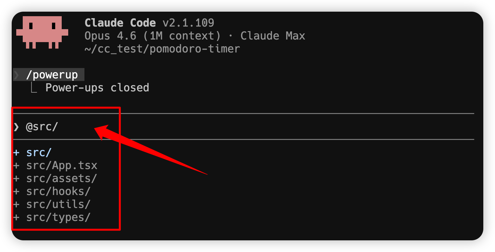
比如：
请帮我优化这个组件的样式。
@src/components/Timer.tsx
这样 Claude 就知道，你只想让它看 Timer.tsx 这个文件，不会去乱翻其他东西。
@ 的用法有这几种：
- @./src/App.tsx：引用单个文件，Claude 只会读取这个文件的内容
- @./src/components/：引用整个目录，Claude 会拿到这个目录的文件列表
- @./src/App.tsx @./src/styles/global.css：引用多个文件，用空格隔开就行
如果你只想让 Claude 看某个文件的一小段，没有什么花哨的语法，直接在提示词里用中文说清楚就行，比如「请重点看 Timer.tsx 的第 10 行到第 20 行」，Claude 会自己定位过去。
为什么 @ 这么重要？
因为它能帮你省下大量上下文空间。
Claude Code 的上下文窗口是有上限的，主流的 Sonnet 和 Opus 模型标配大约 200k token，部分模型还提供 1M 长上下文版。
你可以把它理解为 Claude 的「短期记忆」，这个记忆是有容量限制的。如果你不给 Claude 指定文件，它为了理解你的需求，可能自己去搜索和读取项目里的很多文件，每一行代码都会占用上下文空间。
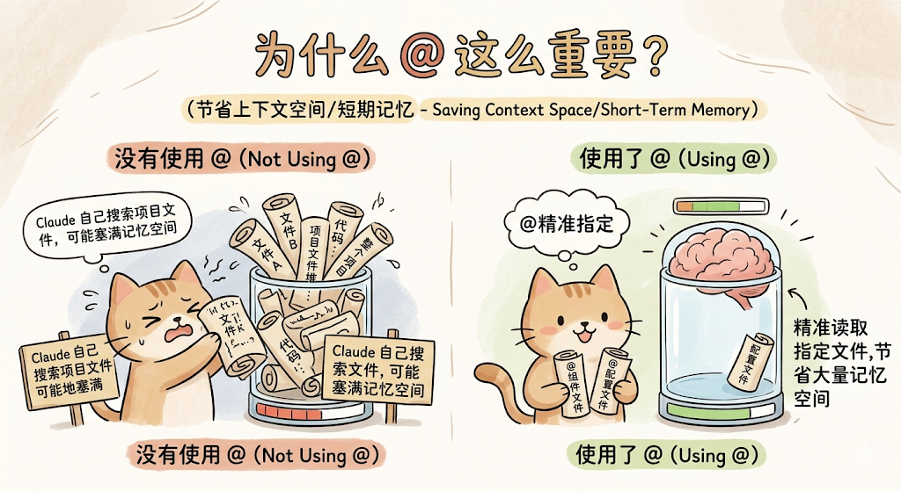
但如果你用 @ 精准指定了文件，Claude 就只需要读取你指定的那几个文件。比如你只 @ 了一个 200 行的组件文件，Claude 就只会读取这 200 行，上下文占用非常小。
用 permissions 规则屏蔽敏感文件
还有一种情况：你的项目里可能有一些文件，你永远不想让 Claude 看到，比如含密钥的配置文件、日志、临时文件等等。
这时候可以在 .claude/settings.json 里用 permissions.deny 规则把这些路径挡住：
{
"permissions": {
"deny": [
"Read(./.env)",
"Read(./.env.*)",
"Read(./secrets/**)"
]
}
}
配上之后，Claude 哪怕想去读这些文件，也会被规则拦下来，不会浪费上下文去看没用的东西，更不会意外把敏感信息塞进对话里。
一句话总结：@ 是给 Claude 发精确地址，让它直奔目标，不迷路还省油。养成习惯，能 @ 就 @。
02｜Steer with modes：用模式驾驭 Claude
第二个课程，教你怎么控制 Claude 的工作方式。
你有没有遇到过这种情况：让 Claude 改个代码，它每改一个文件都要弹出来问你「允许吗？」，改十个文件要确认十次，搞得你心烦意乱？
又或者反过来：让 Claude 自由发挥，结果它一通操作猛如虎，改了二十个文件，你连它改了什么都不知道？
这两种体验都不好。第一种太烦，第二种太危险。
那有没有一种方式，能让你在不同场景下灵活控制 Claude 的「自由度」？
有，用 Shift+Tab 切换工作模式。
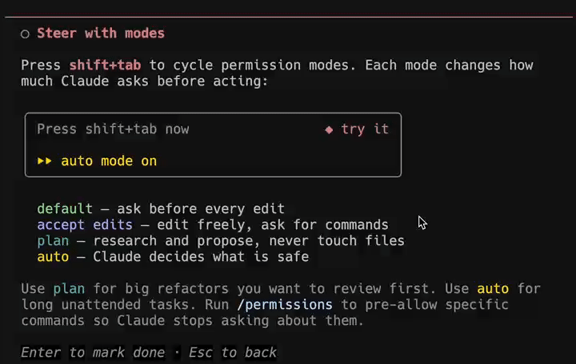
四个工作模式
Claude Code 有四个工作模式，按 Shift+Tab 可以在它们之间循环切换：
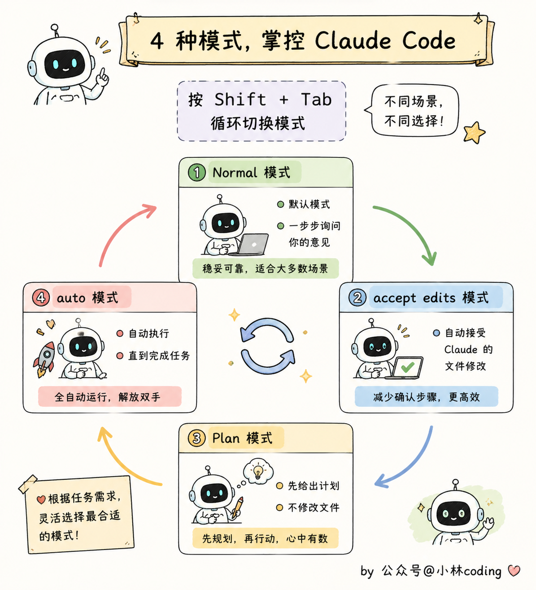
Normal 模式（默认）
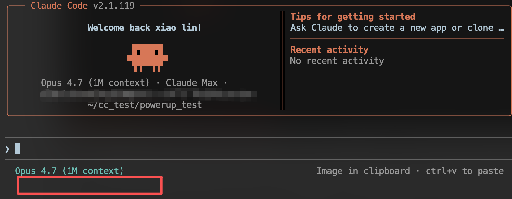
这是最稳妥的模式。Claude 每要做一步操作，都会先征求你的同意。比如它要创建一个文件，会先问你「允许创建吗？」；要执行一个命令，会先问「允许执行吗？」。
你同意了它才动手，不同意它就不做。
这种模式适合你不太确定 Claude 会做什么的场景，或者刚开始用 Claude Code、还不太信任它的阶段。虽然多了一步确认，但心里踏实。
accept edits（自动接受编辑）
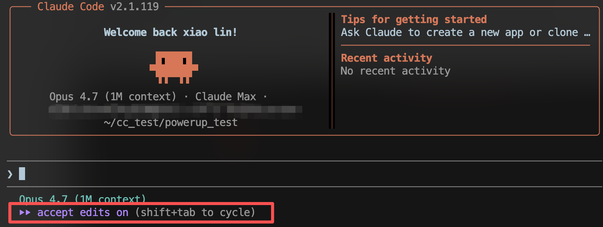
这个模式下，Claude 改文件不再问你了，会自由地读写、新建、删改。但执行命令的时候还是会停下来问一句。
什么意思呢？就是你已经信任 Claude 改代码这件事，但对它「执行命令」这种动作还是想留个把关的机会。比如它想跑 npm install 或者 rm 之类的命令，会先弹个确认让你看一眼。
这是日常写代码迭代的「黄金档位」。你看着它改、它一路改下去，效率高，但又不至于让命令失控。
Plan 模式（计划模式）
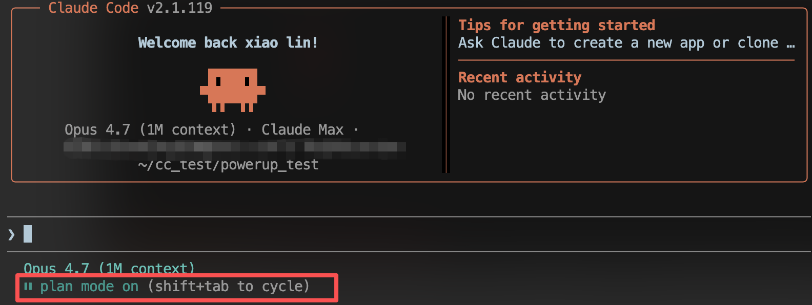
这个模式下，Claude 只看不改。它会分析你的代码、理解你的需求、给你出一个详细的执行方案，但不会动你的任何文件。
等你看完方案觉得没问题，再告诉它「按这个方案执行」，它才会开始动手。
Plan 模式特别适合复杂的开发任务。比如你要重构一个模块，或者做一个比较大的新功能，先让 Claude 在 Plan 模式下帮你规划一下，看看它的思路对不对，比直接让它动手改要安全得多。
auto（自动模式）
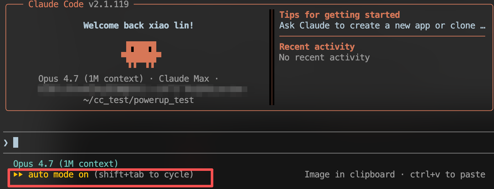
这是最激进的一档。文件编辑不问、命令执行也不问，所有操作 Claude 全自动执行，由它自己用后台的安全分类器判断哪些动作是安全的。
听起来是不是有点危险？确实，如果你完全不监督，它可能会改出一些你不想要的东西。但反过来说，如果你的任务又长又琐碎（比如让它跑一整套迁移脚本、批量改一堆同类文件），auto 模式能让你彻底告别「一直按 y」的疲劳。
那 auto 和 accept edits 的最大区别在哪？一句话，accept edits 只放行编辑、命令还要问；auto 是连命令也不问。这一档的安全感来自 Claude 自己的判断，而不是你的人工把关。
我的建议
刚入门的林友，先用 default，能看到 Claude 每一步在干什么，心里有底。
熟悉了之后，日常写代码就切到 accept edits，让 Claude 自由改文件，命令的时候你再把关，效率和安全感都有了。
遇到复杂任务（重构、新功能），先用 plan 出方案，看完再执行。
只有那种「我完全信任、任务又长又重复」的场景，才考虑切到 auto，让它自己跑通。
一句话总结：四个模式对应四种信任级别。default 最稳、accept edits 写代码最顺、plan 复杂任务先规划、auto 长任务全自动。新手从 default 起步，逐步往后切。
03｜Undo anything：Claude 改错了？一键撤销
第三个课程，教你一个所有新手都会用到的操作：撤销。
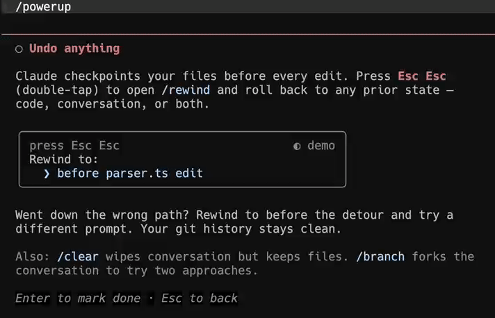
为什么说新手一定会用到？因为你一定会遇到 Claude 改错代码的情况。
这不是 Claude 的问题，而是 AI 编程的常态。它可能误解了你的意思、走错了方向、改了一个不该改的文件。
这时候怎么办？手动去改回去？文件多了你根本记不住它改了哪些地方。
别慌，Claude Code 自带「后悔药」。
两种撤销方式
方式一：连按两次 Esc
在输入框为空的状态下，快速连按两次 Esc 键，就会打开回滚菜单。这个菜单会显示一个时间线，列出 Claude 最近做的每一次操作：
最近的操作：
❯ 1. [14:35] 修改了 useTimer.ts（添加音效逻辑）
2. [14:32] 修改了 Timer.tsx（添加音效触发）
3. [14:28] 创建了 notification.ts（新建文件）
4. [14:25] 修改了 Controls.tsx（重置按钮逻辑）
你只需要用方向键选择要回滚到哪一步，Claude Code 就会自动把代码恢复到那个状态。
方式二：输入 /rewind 命令
效果跟连按 Esc 一样，只是用命令的方式触发：
/rewind
回滚的范围
需要注意的是，这两种方式回滚的不仅仅是文件内容，对话上下文也会一起回滚。
也就是说，回滚之后，Claude 会「忘记」那次操作之后发生的所有对话，就像那次操作从来没发生过一样。
这比你自己手动改文件要彻底得多。
更靠谱的方式：Git
虽然 Claude Code 自带的回滚很好用，但它有一个局限：只能回滚 Claude 直接创建或编辑的文件。
如果 Claude 执行了 npm install 之类的命令，生成了 node_modules、package-lock.json 等文件，回滚是管不了这些的。
所以，如果你要做比较大的改动，最靠谱的方式还是先用 Git 存一份档：
git add .
git commit -m "改动前的存档"
万一 Claude 改坏了，还是得靠 Git 来管理代码仓库比较好，一条命令就能回到安全状态：
git checkout .
一句话总结：Claude 改错了不慌，Esc+Esc 或 /rewind 一键回滚。大改动前先 git commit 存档，双重保险。
04｜Run in the background：让 Claude 在后台干活
第四个课程，教你一个很多人不知道的操作：让 Claude 在后台执行任务。
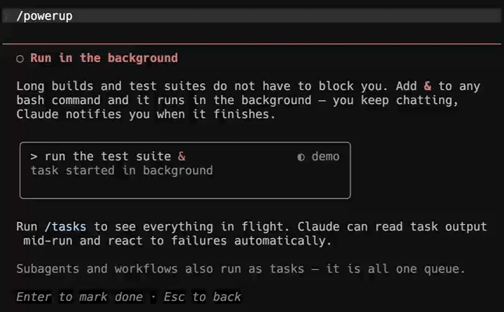
什么意思呢？
举个例子。你让 Claude 帮你跑一下项目的构建命令 npm run build，这个命令可能要跑一两分钟。在正常模式下，这一两分钟里你啥也干不了，只能等着。
但如果让它在后台跑呢？你就可以继续跟 Claude 聊别的，让它帮你改代码、回答问题，不用傻等构建完成。
怎么在后台运行？
方法其实特别简单：你根本不用记什么 shell 符号，直接用大白话告诉 Claude「这条命令请在后台跑」就行：
请帮我在后台运行 npm run build，跑完了告诉我结果。
就这么一句话，Claude 会自动用 Bash 工具的「后台模式」去执行这条命令。你不用在命令末尾加 &，也不用切到 Bash 模式，Claude 自己就会处理。
等命令跑完了，Claude 会主动告诉你结果。如果中途出错了，它也会把错误信息捞出来给你看。
查看后台任务
如果你想看看当前有哪些后台任务在跑，可以用：
/tasks
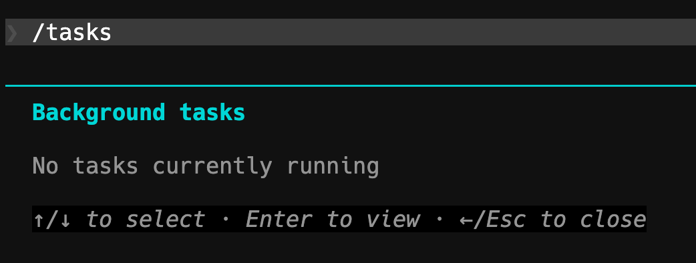
它会列出所有后台任务的状态：正在运行、已完成、还是出错了。
适合什么场景？
后台运行特别适合这些「耗时长但不需要你盯着」的任务：
- 项目构建（npm run build）
- 跑测试用例（npm run test）
- 安装依赖（npm install）
- 数据库迁移
这些任务可能要跑几十秒甚至几分钟，没必要在终端里干等着。让 Claude 在后台跑，你继续做你的事，效率直接翻倍。
一句话总结：命令末尾加 & 就能让任务在后台跑，不用傻等。用 /tasks 查看后台任务状态。
05｜Teach Claude your rules：让 Claude 记住你的规则
第五个课程，可能是所有课程里对你日常使用影响最大的一个。
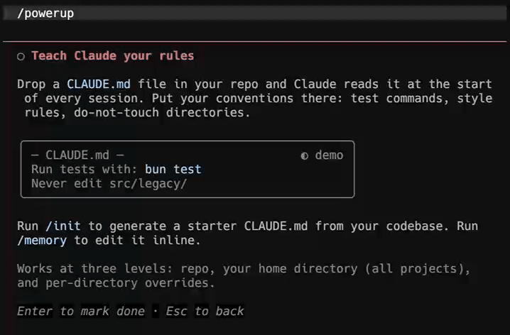
为什么这么说？因为你一定会遇到这个烦人的场景：每次重新打开 Claude Code，或者用 /clear 清空对话之后，你都要重新告诉 Claude「我这个项目是做什么的、用了什么技术栈、代码规范是什么……」
一遍两遍还行，多了真的很烦。有没有办法让 Claude 永远记得你的项目信息？
有，用 CLAUDE.md。
CLAUDE.md 是什么？
CLAUDE.md 是一个放在你项目根目录的文件，Claude Code 每次启动的时候都会自动读取这个文件的内容，把它当作理解你项目的「背景资料」。
你可以把它理解为 Claude 的「项目记忆」。只要你在这个项目目录下启动 Claude Code，它就知道你的项目是做什么的、用了什么技术栈、代码规范是什么，不用你每次重新交代。
怎么创建 CLAUDE.md ？
最简单的方式是用 /init 命令：
/init
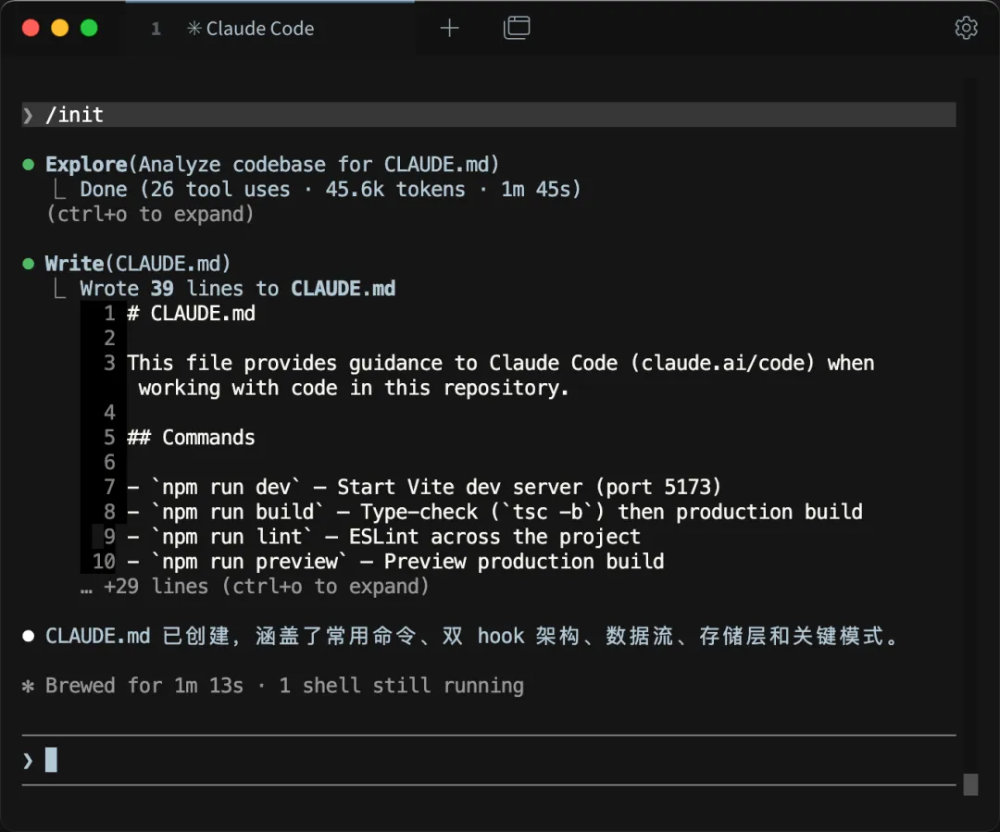
Claude 会扫描你的项目结构，然后自动生成一份 CLAUDE.md，里面包含项目的基本信息、技术栈、目录结构等。
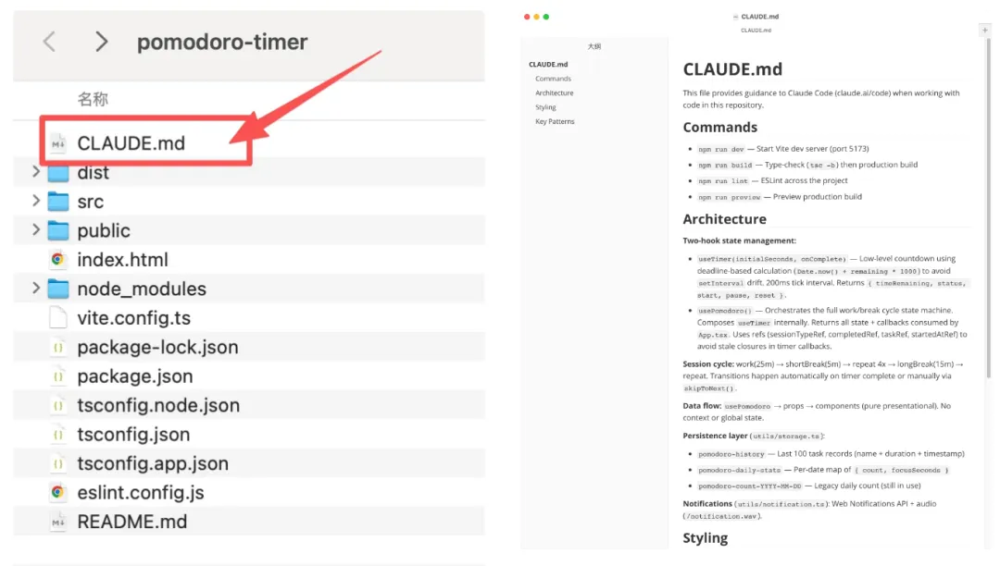
你也可以自己手动创建这个文件，把你觉得 Claude 需要知道的信息写进去。一份好的 CLAUDE.md 通常包含这几部分：
# 项目名称
一句话说清楚这个项目是做什么的。
## 技术栈
- React 10 + TypeScript + Tailwind CSS
## 代码规范
- 使用函数式组件，不用 class 组件
- 变量命名用驼峰命名法
- 组件文件名用 PascalCase
## 项目结构
- src/components/ - UI 组件
- src/hooks/ - 自定义 Hook
- src/utils/ - 工具函数
写什么、不写什么？
CLAUDE.md 有一个很重要的原则：越精准越好，不是越长越好。
太长的 CLAUDE.md 会占用大量上下文空间，反而让 Claude 工作效率下降。所以每写一条信息之前，先问自己一个问题：「如果删掉这条，会不会让 Claude 犯错？」如果不会，就不写。
应该写的： 项目简介、技术栈、代码规范、目录结构 不应该写的： 详细的 API 文档（太长）、每次都变的临时需求、过于泛泛的描述
/memory 管理记忆
除了项目级的 CLAUDE.md，Claude Code 还有一个 /memory 命令，可以帮你管理「个人记忆」。这些记忆是跨项目的，不管你在哪个项目里，Claude 都会记住。
比如你可以用它来存储你的通用编码偏好：
/memory
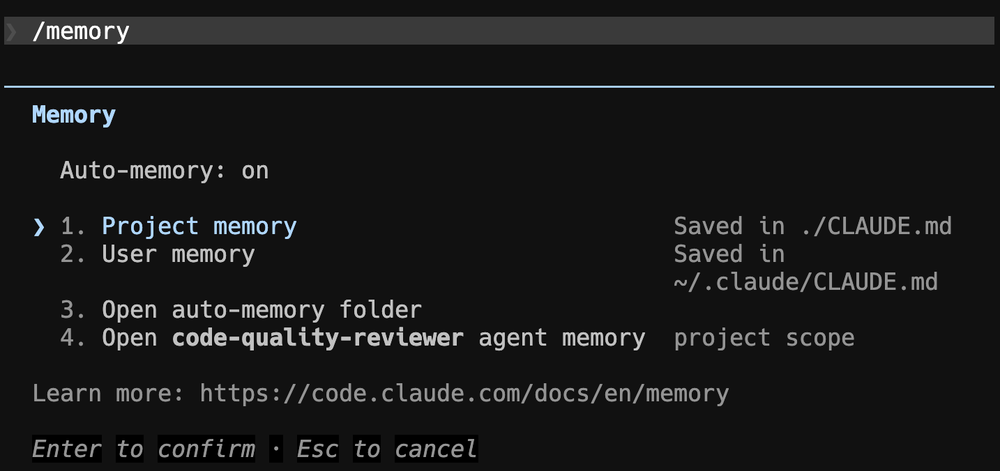
它会打开一个编辑界面，让你查看和修改所有的记忆文件，还能开关 auto memory（自动记忆）功能。
另外还有一种更省事的方式：直接用自然语言告诉 Claude「记住这件事」，比如：
请记住：我这个项目统一用 pnpm，不用 npm。
Claude 会自己判断这条信息值不值得记，觉得值得记就会写到 auto memory 里，下次也会记得。
CLAUDE.md 的几个层级
Claude Code 的 CLAUDE.md 实际上支持好几个层级，按照日常最常用的顺序是这样的：
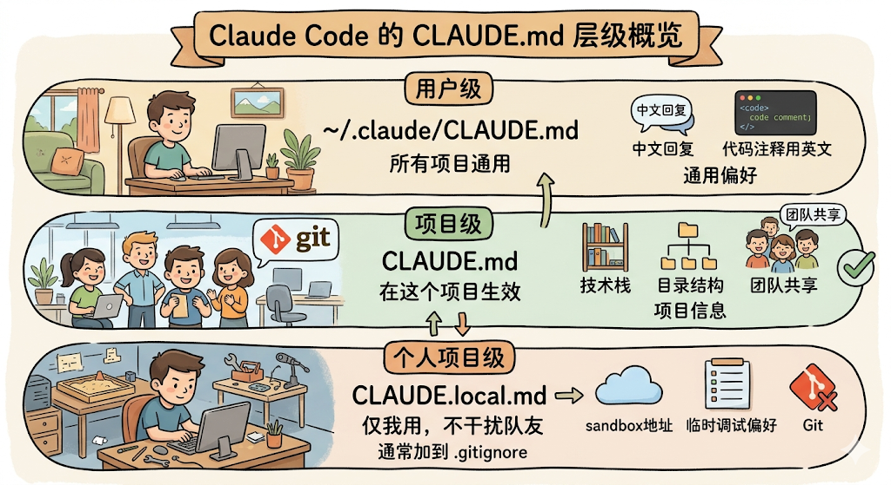
- 项目级：放在项目根目录的
CLAUDE.md（或者.claude/CLAUDE.md），只在这个项目里生效。适合写项目相关的信息，比如技术栈、目录结构。这个文件可以提交到 Git 里，团队成员共享。 - 个人项目级：
CLAUDE.local.md，也放在项目根目录，但通常加到.gitignore里不提交。适合写你自己的临时调试偏好、sandbox 地址这种「只有我用」的内容，不会干扰到队友。 - 用户级：放在你 home 目录下的
~/.claude/CLAUDE.md，在所有项目里都生效。适合写你个人的通用偏好，比如「请用中文回复」「代码注释用英文」。
这几个层级的内容在启动时会一起合并进上下文，越具体的层级优先级越高（项目级 > 用户级）。
一句话总结：CLAUDE.md 是给 Claude 装的「长期记忆」，写一次，永远记得。/init 快速创建，/memory 管理个人偏好，记得保持精简。
06｜Extend with tools：用 MCP 给 Claude 装外挂
第六个课程，教你一个让 Claude Code 能力大增的机制：MCP。
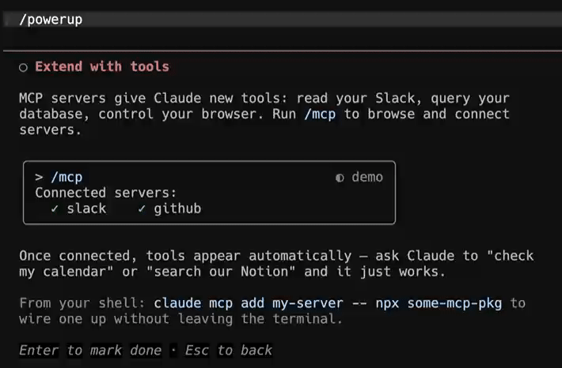
MCP 全称是 Model Context Protocol，翻译过来叫「模型上下文协议」。听着很唬人对吧？但其实你可以把它理解为一个「外挂接口」。
什么意思？
Claude Code 本身能做的事情是有限的：读写文件、执行命令、搜索代码。但如果你想让 Claude 做更多的事情呢？比如让它帮你搜索网页、操作数据库、调用第三方 API？
MCP 就是干这个的。它让你可以把外部工具「接入」Claude Code，让 Claude 能调用这些工具的能力。
Claude Code 就像一台电脑，出厂自带了几个基本软件（文件管理器、命令行终端、代码编辑器）。而 MCP 就像是 USB 接口，你可以通过这个接口给电脑接上打印机、摄像头、手柄等各种外设，让电脑能做更多的事情。
怎么管理 MCP？
用 /mcp 命令：
/mcp
它会打开一个管理界面，你可以在这里添加、删除、配置 MCP server。
MCP server 就是那些「外设」。每个 MCP server 提供不同的能力，比如：
- Brave Search MCP：让 Claude 能搜索网页
- Postgres MCP：让 Claude 能操作 PostgreSQL 数据库
- Playwright MCP：让 Claude 能控制浏览器做自动化测试
- Filesystem MCP：让 Claude 能访问指定目录之外的文件
怎么添加 MCP server？
加 MCP server 主要有两种方式，一种是命令行直接加（推荐），一种是手动改配置文件。
方式一：用 **claude mcp add** 命令（推荐）
直接在终端里跑一条命令就行，连 JSON 都不用动。命令的基本格式是这样：
claude mcp add <名字> -- <启动 MCP server 的命令>
中间那个 -- 是分隔符，告诉 Claude Code「双横杠前面的是给 claude 的参数，后面的是用来启动 MCP server 的命令」。
方式二：手动改 settings.json
你也可以在 .claude/settings.json 或 ~/.claude/settings.json 里直接写配置：
{
"mcpServers": {
"你给这个 server 起的名字": {
"command": "npx",
"args": ["-y", "对应的 MCP server 包名"],
"env": {
"需要的API密钥": "你的值"
}
}
}
}
效果跟命令行方式一样。如果是团队项目，可以把这份配置写到项目根目录的 .mcp.json，提交到 Git，让队友拉下来就能用。
实战：用 12306-mcp 查火车票
光说不练假把式，小林带你装一个真实的 MCP，体验一下。
我们以社区里很火的 12306-mcp 为例。这个 MCP 是开源项目（GitHub 上的 Joooook/12306-mcp），接入之后，你就可以直接在终端里用自然语言查 12306 的余票、车次、中转方案。
第一步：用命令安装
打开终端，跑下面这条命令：
claude mcp add 12306 -s user -- npx -y 12306-mcp
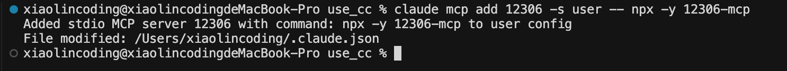
这条命令的意思就是：给 Claude Code 加一个名字叫「12306」的 MCP server，作用域是 user（在所有项目里都能用），启动方式是 npx -y 12306-mcp。
跑完之后可以用：
claude mcp list
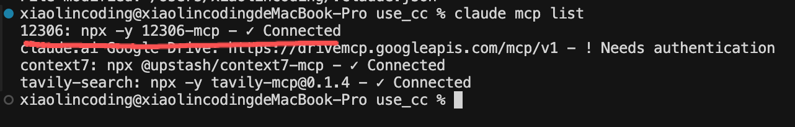
或者在 claude 里用 /mcp 命令
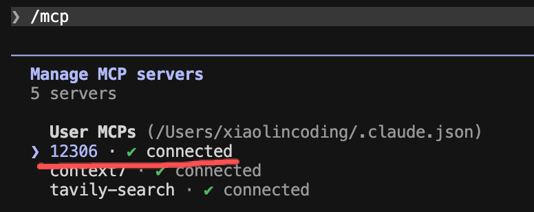
确认一下 12306 是不是真装上了。
第二步：在 Claude Code 里直接问
启动 Claude Code，然后用大白话问就行：
帮我查 5 月 1 日北京到上海的高铁票，要二等座。
Claude 会自动识别出这是火车票查询任务，调 12306-mcp 去查实时数据，然后把车次、时间、票价、余票整理成一张清晰的列表给你。
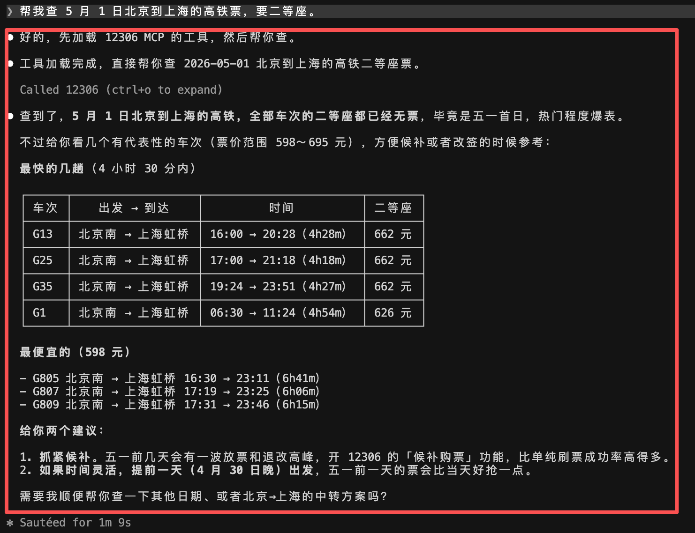
你想想看，你都不需要打开 12306 网站，也不需要记任何 API，一句话搞定。
如果想换一个查询，比如「再加一个 5 月 7 日返程的」，直接在对话里说就行，Claude 会自己调用对应的工具。
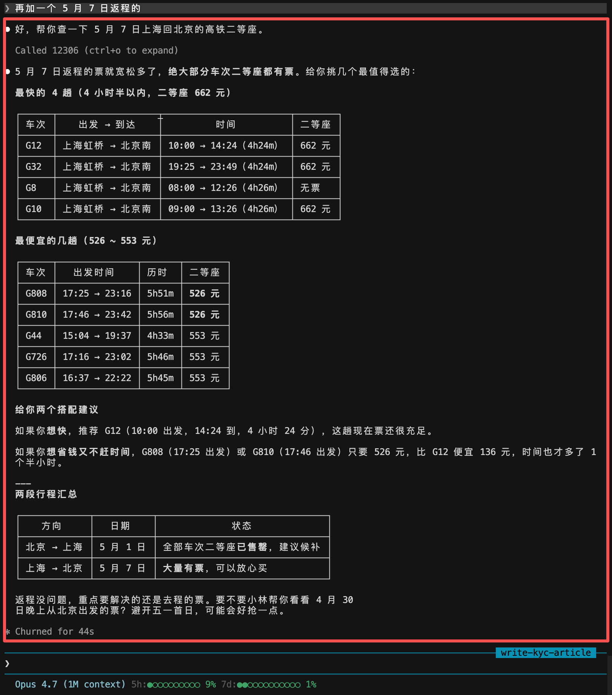
移除 MCP server
如果某个 MCP 不想用了，直接：
claude mcp remove 12306 -s user
就能干净地卸掉。
MCP 的价值
MCP 最大的价值在于「扩展」。Claude Code 出厂自带的能力可能不够用，但通过 MCP，你可以按需接入各种工具，让 Claude 变成一个越来越强大的全能助手。
而且 MCP 是一个开放的协议，社区里有大量现成的 MCP server 可以用，你甚至可以自己开发一个。
一句话总结：MCP 是给 Claude Code 装外挂的接口，用 /mcp 管理。通过接入不同的 MCP server，让 Claude 能搜索网页、操作数据库、控制浏览器，能力无限扩展。
07｜Automate your workflow：让 Claude 自动化你的工作流
第七个课程，教你两个让 Claude Code 更「聪明」的机制：Skills 和 Hooks。
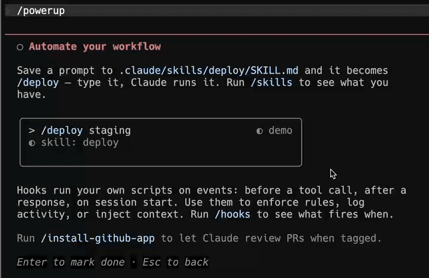
Skills：给 Claude 装技能包
Skills 是 Claude Code 的插件机制。你可以把它理解为 Claude 的「技能包」，安装之后，Claude 在某个特定领域会表现得更好。
比如有一个叫 frontend-design 的 Skill，专门用来生成高质量的前端界面。启用之后，Claude 在做前端页面的时候，设计水平会有明显的提升。
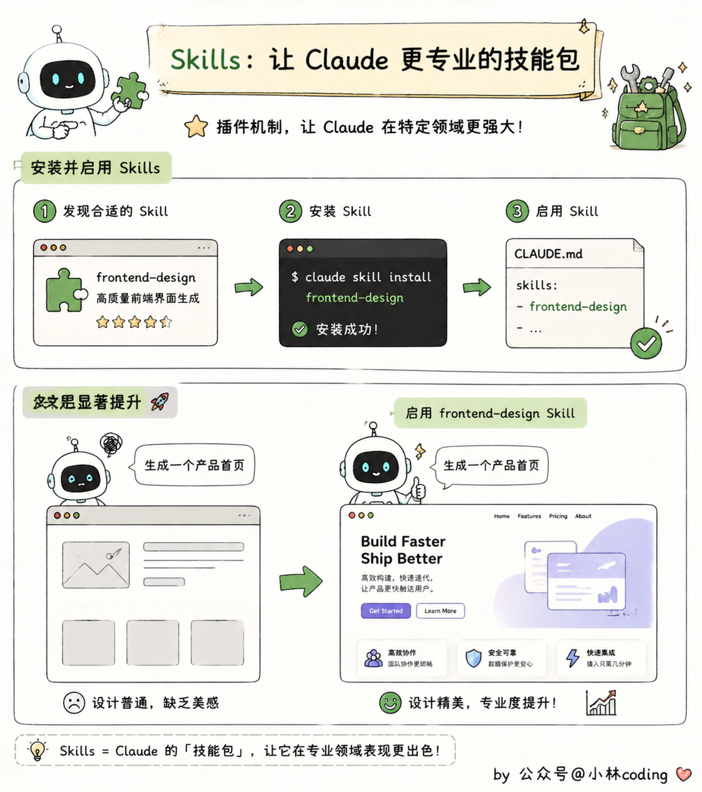
Skill 怎么装？其实一份 Skill 就是一个 SKILL.md 文件（外加一些可选的辅助文件），只要把它放到下面这几个目录里，Claude Code 就会自动识别：
~/.claude/skills/<技能名>/SKILL.md：个人全局可用.claude/skills/<技能名>/SKILL.md：当前项目可用
你既可以自己手写一份 SKILL.md，也可以通过 /plugin 命令去安装打包好的插件（plugin 里可以带 skills、hooks、命令等等，是一个更大的集合）。
实战：用一行命令装上 frontend-design
光讲机制太抽象，咱们直接装一个真的 skill 上手玩玩。
就拿 frontend-design 来说，这是 Anthropic 官方推出的明星 skill，目前装机量已经超过 27 万次。它的核心作用，是把 Claude 生成前端代码时的那种「一眼 AI 味」给治好，让你拿到的页面更像真人设计师做出来的。
怎么装呢？打开 Claude Code，输入下面这条命令：
/plugin install frontend-design@claude-plugins-official
来解释一下这条命令。@ 前面的 frontend-design 是 skill 的名字，@ 后面的 claude-plugins-official 是它所在的「官方插件市场」。这个官方市场是 Claude Code 启动时自带的，不用你提前 add，直接装就行。
装完之后，如果你不想重启 Claude Code，就跑一下：
/reload-plugins
让新 skill 立刻在当前会话生效。
接下来就是见证奇迹的时刻。你直接说一句话试试：
帮我设计一个 SaaS 产品的定价页面，三档套餐。
Claude 一识别这是前端任务，就会自动加载 frontend-design 的设计规范，按照里面的字体、间距、配色、布局规则去生成代码。
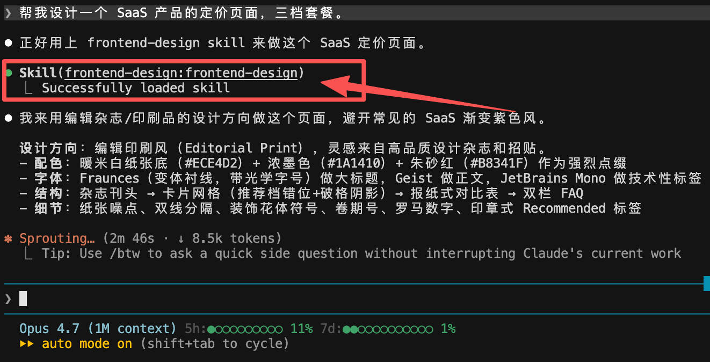
生成出来的页面，会比你不装这个 skill 的时候，质感高一大截。
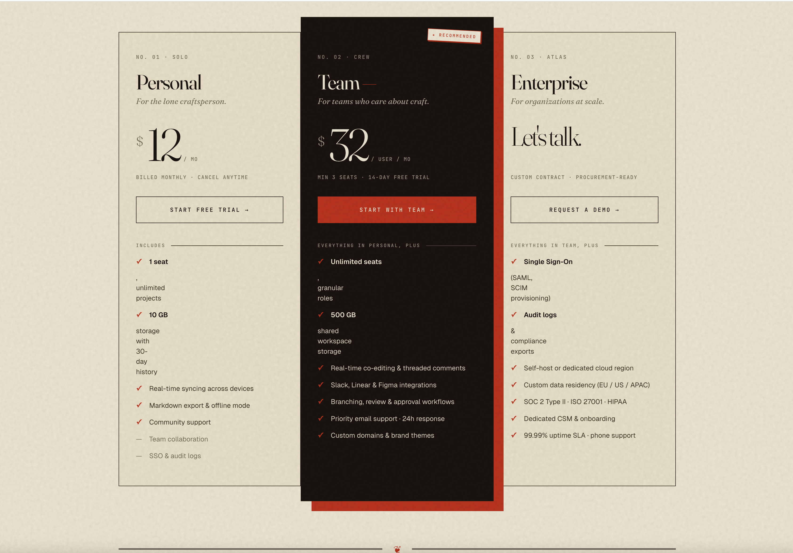
你也可以显式 / 触发：
/frontend-design 帮我重新设计这个页面的样式
如果哪天不想用了，卸载也是一条命令的事：
/plugin uninstall frontend-design@claude-plugins-official
干净利落。
Skills 的本质是一份由专业人员编写的指南文件（SKILL.md + 可选的参考材料），里面包含了复杂的指令、模板和参考文档。当 Claude 加载了这个 Skill，就相当于「临时培训」了一下，按照更专业的标准来输出结果。
Hooks：给 Claude 的操作加「钩子」
Hooks 是 Claude Code 的自动化钩子机制。
它的工作原理很简单：你在某个操作「之前」或「之后」挂一个自定义脚本，Claude 每次执行这个操作的时候，就会自动触发你的脚本。
听起来有点抽象？举个例子你就懂了。
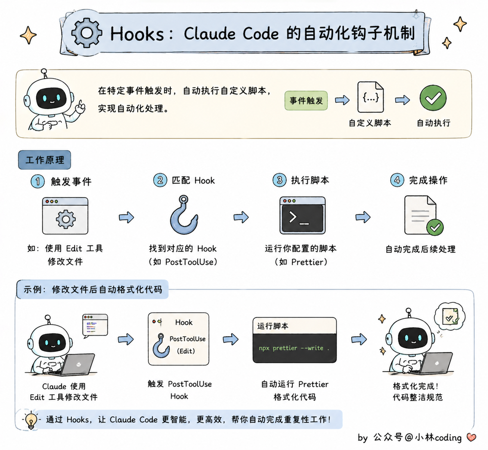
比如你希望 Claude 每次修改完文件之后，自动帮你运行一下代码格式化工具（比如 Prettier）。你就可以设置一个 PostToolUse Hook，挂在 Edit 工具上。这样 Claude 每次用 Edit 工具改完文件，就会自动触发 Prettier 帮你格式化代码。
Hooks 有两种类型：
- PreToolUse：在工具执行之前触发。适合做输入校验、拦截不安全的操作。
- PostToolUse：在工具执行之后触发。适合做自动格式化、自动测试等后续处理。
怎么配置 Hooks？
Hooks 的配置写在项目的 .claude/settings.json 或全局的 ~/.claude/settings.json 里。
这里有一个小细节林友一定要注意：Claude Code 的 hook 脚本不是通过环境变量拿文件路径的，而是通过标准输入（stdin）接收一段 JSON，里面包含了这次操作的所有信息。
你可以通过可用的环境变量（比如 $CLAUDE_PROJECT_DIR）拿到项目根目录，但具体这次改的是哪个文件，要从 stdin 的 JSON 里解析出来。
比如配置一个自动格式化的 Hook，正确的写法是这样：
{
"hooks": {
"PostToolUse": [
{
"matcher": "Edit|Write",
"hooks": [
{
"type": "command",
"command": "jq -r '.tool_input.file_path' | xargs -I {} npx prettier --write {}"
}
]
}
]
}
}
这里的 jq 负责从 stdin 的 JSON 里把 tool_input.file_path 字段读出来，然后 xargs 把它交给 Prettier 去格式化。这样每次 Claude 用 Edit 或 Write 工具改完文件，就会自动跑一次 Prettier。
如果你不太习惯 jq，也可以写一个小的 shell 脚本放到 $CLAUDE_PROJECT_DIR/.claude/hooks/format.sh 里，脚本里自己 read stdin 再解析 JSON，command 字段就写 "$CLAUDE_PROJECT_DIR/.claude/hooks/format.sh" 指过去。
Hooks 能做什么？
Hooks 的应用场景非常多，举几个例子：
- 自动格式化：每次修改文件后自动运行 Prettier/ESLint
- 自动测试：每次修改测试文件后自动跑相关测试
- 安全检查：每次修改配置文件后检查是否有敏感信息泄露
- 自动提交：每次修改完代码后自动 git add + commit
一句话总结：Skills 给 Claude 装技能包，让它在特定领域更强；Hooks 给操作加钩子，实现自动化工作流。两个配合使用，Claude Code 直接变成你的定制化开发助手。
08｜Multiply yourself：让 Claude 的分身帮你干活
第八个课程，教的是 Claude Code 里一个很强大但很多人没用过的功能：子代理（Subagents）。
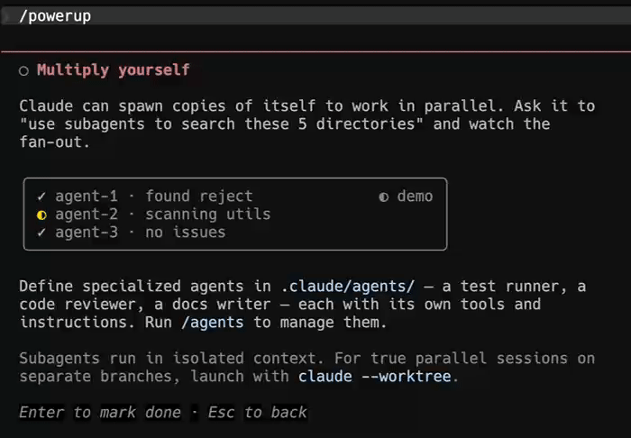
什么是子代理？
你可以把子代理理解为 Claude 的「分身」。
当你启动一个子代理的时候，Claude Code 会在后台创建一个全新的 Claude 实例，这个实例有自己的独立上下文窗口，跟你当前的主对话完全隔离。
子代理干完活之后，只会把最终结果汇报给你的主对话。
为什么需要子代理？
你可能会问：我直接让 Claude 帮我做不就行了？为什么要搞一个分身？
原因有两个：
第一个原因：独立视角。
如果代码是 Claude 自己写的，你让它自己审查，它多少会「手下留情」。但如果你启动一个子代理来审查，这个子代理是一个全新的实例，它不知道这段代码是谁写的，只会客观地指出问题。
第二个原因：保护主会话的上下文。
前面我们说过，Claude Code 的上下文窗口是有上限的。如果你让 Claude 在主对话里做一个很复杂的任务（比如审查整个项目的代码），它会读取大量文件、生成大量分析结果，一下子就把上下文吃满了。
但子代理有自己独立的上下文空间，不管它读了多少文件、分析了多少代码，这些只占用它自己的上下文，对你的主会话零影响。等它干完活，只会把一份精炼的结果摘要汇报回来，占用很小。
怎么创建子代理？
用 /agents 命令：
/agents
然后选择创建新的子代理
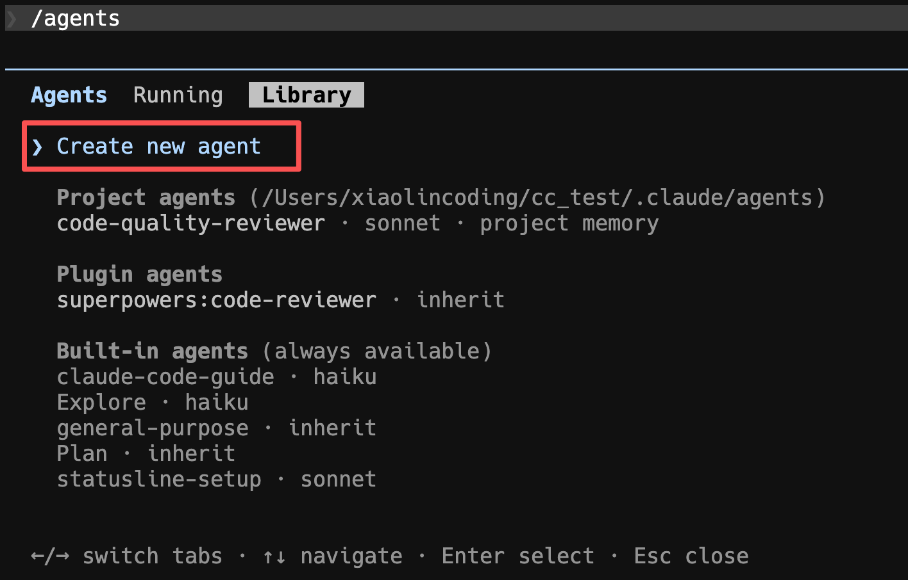
接下来，按照向导一步步配置：
- 选择作用域（Project 或 User）
- 用自然语言描述子代理的职责（比如「帮我审查代码质量」）
- 配置可用工具（子代理能使用哪些工具）
- 选择使用的模型
- 选择标识颜色
创建完成之后，你就可以随时让 Claude 使用这个子代理了：
用 code-guality-reviewer agents 帮我审核这个项目的代码
Claude 会启动对应的子代理，用独立的上下文窗口来完成审查任务。你能在界面上看到子代理的颜色标识，表示它正在工作。
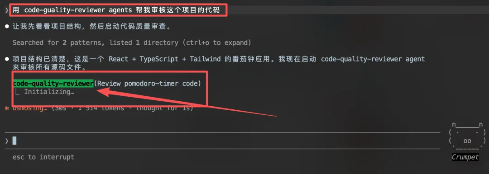
子代理适合什么场景？
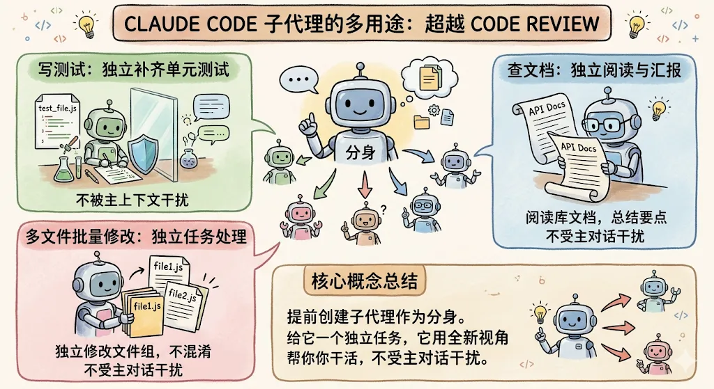
- 代码审查：让子代理用独立视角帮你审查代码质量
- 写测试：让子代理帮你补齐单元测试，不受主对话干扰
- 查文档：让子代理去读某个库的文档，总结要点后汇报
- 多文件批量修改：让子代理独立处理一组文件的修改
一句话总结：子代理是 Claude 的「分身」，用 /agents 创建。它有独立的上下文空间，适合做代码审查、写测试等需要「独立视角」的任务。
09｜Code from anywhere：随时随地编码
第九个课程，教你两个跨设备协作的命令：/remote-control 和 /teleport。这两个命令是一对，方向正好相反，林友理解的时候可以把它们放在一起看。
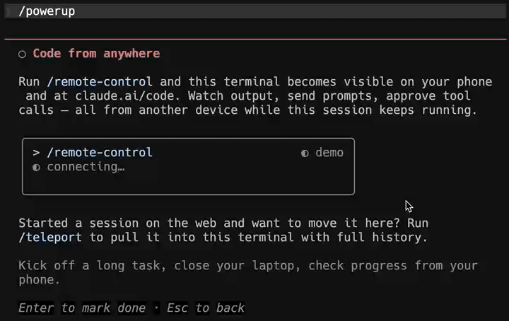
先想象一个常见场景：你在公司用终端里的 Claude Code 开发一个项目，下班路上想用手机继续看看进展，回家之后又想换成网页版继续改，或者反过来，在 claude.ai 网页上起了个会话，回到电脑前想把它拉到本地终端继续跑。
这种「跨设备、跨终端」切换的需求，就是这两个命令要解决的问题。
/remote-control：把本地会话「暴露」给网页
在终端里的 Claude Code 会话中输入：
/remote-control
这个命令会让你当前的终端会话进入可远程控制的状态。
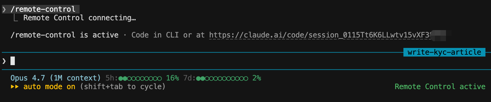
然后你可以在 claude.ai 网页上连接到这个会话，从浏览器里给 Claude 发指令。
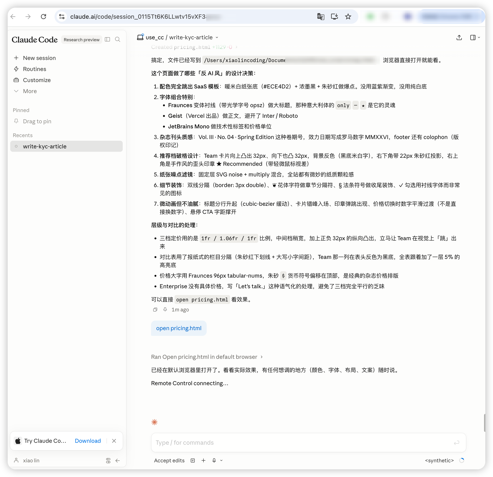
也就是说，Claude Code 实际还是跑在你本地电脑的终端里，本地的文件、依赖、环境都不动，只是多了一条「遥控线」让你从浏览器里操作它。你在外面用手机、平板、另一台电脑都能打开 claude.ai 继续指挥它干活。这个命令还有一个短别名叫 /rc。
/teleport：把网页上的会话「传送」到终端
/teleport 的方向正好反过来。
如果你之前是在 claude.ai 网页上开的 Claude Code 会话（也就是「Claude Code on the web」），现在想把这个会话继续在本地终端里做下去，就可以在本地终端里输入：
/teleport
它会弹出一个选择器，列出你在网页上正在跑的会话，选中之后，Claude Code 会把对应的分支（branch）和整段对话历史「传送」到当前终端里，你就可以无缝接着继续干了。这个命令还有一个短别名叫 /tp，不过要注意：它需要 claude.ai 的订阅才能用。
实际体验
这两个命令配合起来，就是一个「双向通道」：一个让你从外面遥控本地的会话，一个让你把云端的会话拉回本地继续。
对于经常需要多设备办公的林友来说，非常实用。你再也不用担心「会话在公司的电脑上，出门就接不上」这种尴尬情况了。
一句话总结：/remote-control 让你从浏览器遥控终端里的 Claude Code（出门在外也能指挥本地会话），/teleport 让你把 claude.ai 网页上的会话拉回本地终端继续做。一个向外暴露，一个向内传送，方向相反，搭配使用。
10｜Dial the model：调节 Claude 的「大脑」
最后一个课程，教你一个很实用但很多人忽略的操作：切换模型和调节思考深度。
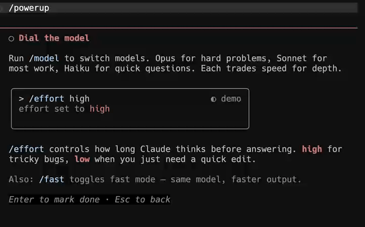
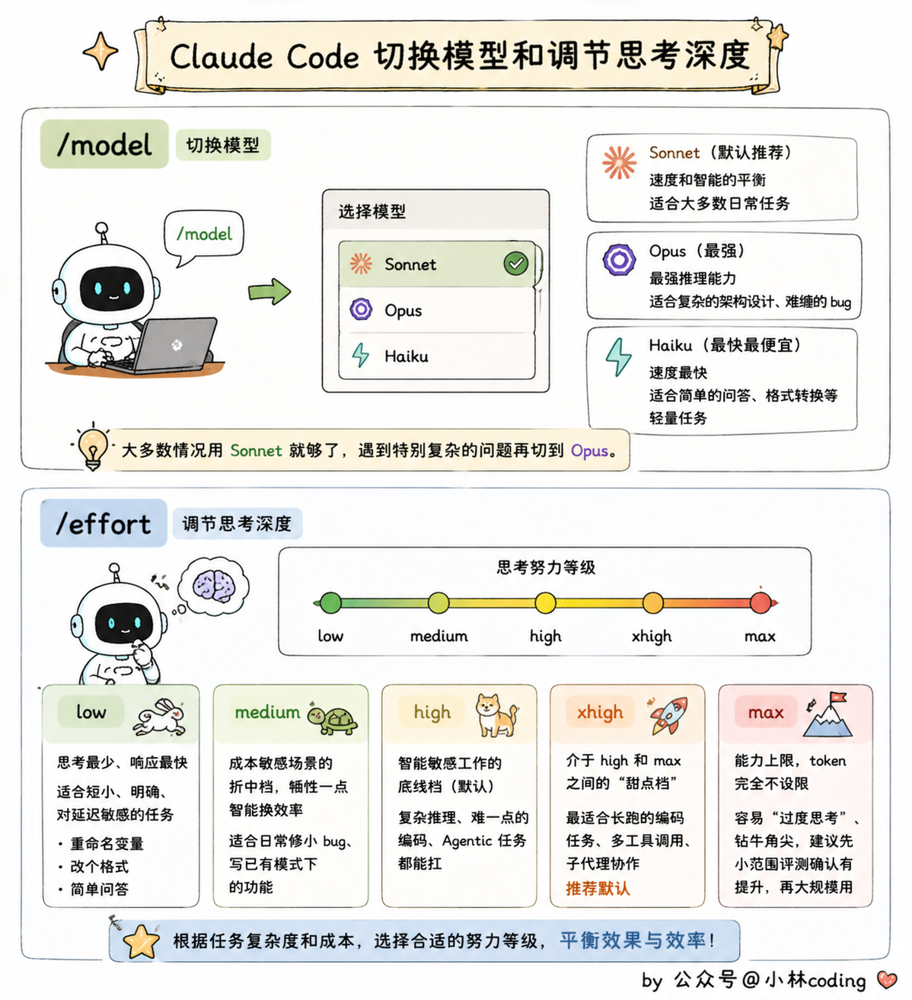
用 /model 切换模型
Claude Code 支持多个模型，你可以用 /model 命令来切换：
/model
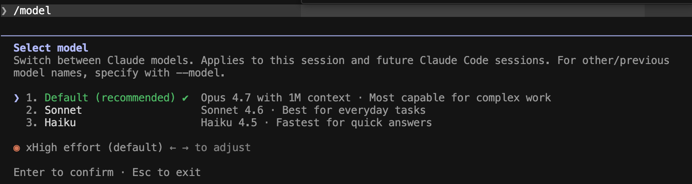
执行后会弹出一个模型选择界面，你可以选择不同的模型：
- Sonnet：速度和智能的平衡，适合大多数日常任务
- Opus：最强推理能力，适合复杂的架构设计、难缠的 bug
- Haiku：速度最快，适合简单的问答、格式转换等轻量任务
不同模型的价格不同，Opus 最贵但最强，Haiku 最便宜但最轻量。大多数情况下用 Sonnet 就够了，遇到特别复杂的问题再切到 Opus。
用 /effort 调节思考深度
除了切换模型，你还可以调节 Claude 的「思考努力等级」，也就是它在回答之前愿意花多少算力去推敲问题。新版 Claude Code 用的是 /effort 命令：
/effort
很多林友以为思考档位是越高越好，其实不是。每一档都有它最合适的场景，用错了反而会让 Claude 又慢又啰嗦。
新版 Claude Code 里，/effort 的滑块从左到右一共有 5 档：low、medium、high、xhigh、max。我们一档一档来看：
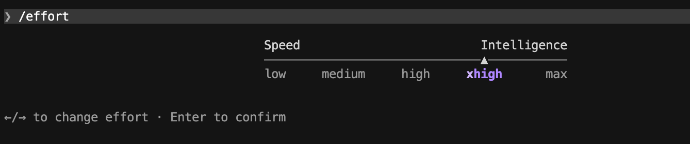
- low：思考最少、响应最快。适合短小、明确、对延迟敏感的任务，比如重命名变量、改个格式、问句简单的「这函数返回什么」
- medium：成本敏感场景的折中档，牺牲一点智能换效率。适合日常修小 bug、写已有模式下的功能
- high：智能敏感工作的底线档。相当于不设置时的默认行为，复杂推理、难一点的编码、Agentic 任务都能扛
- xhigh：介于 high 和 max 之间的「甜点档」。最早是 Opus 4.7 推出来的，现在 Sonnet 4.6 等较新模型也支持了。最适合长跑的编码任务、多工具调用、子代理协作，是大多数编程场景的推荐默认
- max：能力上限，token 完全不设限。听起来最猛，但容易「过度思考」，钻牛角尖，建议先做小范围评测确认有提升，再大规模用
最后还有一条容易被忽略的小知识，low、medium、high、xhigh 这四档设定之后会跨 session 记住，下次启动还是这个档；只有 max 是「一次性」的，会话结束就自动失效，你不用担心忘了切回来一直烧 token。
这里林友要留意一个新旧版本的差异：老版本的 Claude Code 曾经有 think、think hard、think harder、ultrathink 四个思考关键词。但在新版本里，官方已经明确说明：只有「ultrathink」这一个关键词是真正生效的，其他几个都只会被当成普通的提示词，不会真的加深思考。
ultrathink：临时顶到最高挡
那除了用 /effort 改全局档位之外，还有没有一种「一次性」的办法？有，就是 ultrathink。
使用方式很简单，直接在提示词里加上这个词就行：
请帮我分析这个性能瓶颈的根因。ultrathink
加上 ultrathink 之后，Claude 会在这一轮临时把努力等级顶到 high 去思考，分析得更深入。用完就自动恢复成你原来的 /effort 设置，不会一直占着最高档。
你可以把 ultrathink 理解成「遇到硬骨头，这一轮临时起飞一下」；而 /effort 是「长期设定一个巡航档位」，两者配合使用。
不同场景怎么选？
用个生活中的比喻来帮你理解：
- low 就像你随手回答朋友的问题，脱口而出
- medium 就像你在做一道日常工作任务，该想的都想了
- high / ultrathink 就像你在解一道数学竞赛题，绞尽脑汁一步步推演
注意：思考越深，消耗的 token 越多，响应也越慢。简单问题别滥用，复杂问题再用。
模型 + 思考深度的组合策略
给你一个实用的组合建议：
| 场景 | 模型 | 思考档位 |
|---|---|---|
| 简单的代码修改 | Sonnet | medium |
| 日常编码、Agentic 任务 | Opus / Sonnet | xhigh（推荐默认） |
| 复杂的 bug 排查 | Opus | xhigh，必要时切 max |
| 架构设计 | Opus | xhigh 或 max（先小范围验证） |
| 快速的格式转换 | Haiku | low |
| 代码审查 | Sonnet | medium |
顺便提一句，如果你已经把 xhigh 作为默认档了，原来那个 ultrathink 关键词的边际作用就被削弱了不少，因为 xhigh 本来就已经在「几乎总是深思考」的状态。如果你还在 high 或更低的档位，ultrathink 仍然是临时拉高一档的有用手段。
一句话总结：/model 切换模型，Sonnet 够用、Opus 最强、Haiku 最快。/effort 设长期的思考档位，日常编码推荐 xhigh，遇到真正硬的骨头再切 max（先确认有提升）。简单问题别滥用，复杂问题效果拔群。
补充：几个高频使用的「维护」命令
除了 /powerup 里教的这 10 大类课程，还有几个日常使用中非常高频的命令，小林也顺便给大家提一下。
/context：看看 Claude 还有多少「脑容量」
/context
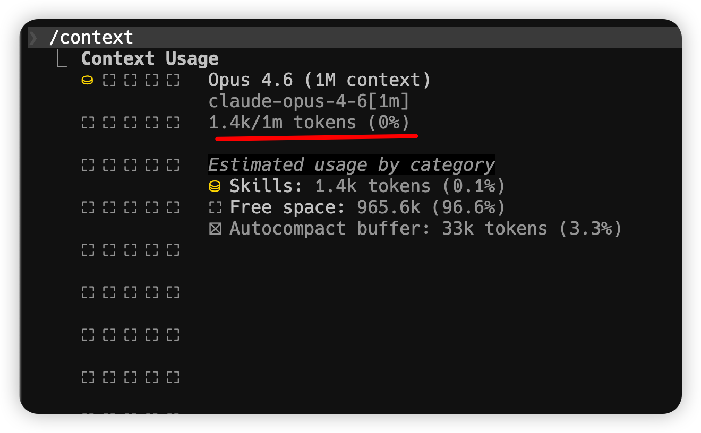
这个命令会显示当前上下文窗口的使用情况。如果你发现 Claude 开始「犯迷糊」，答非所问，先用这个命令看看是不是上下文快满了。
/compact：给 Claude 减负
/compact
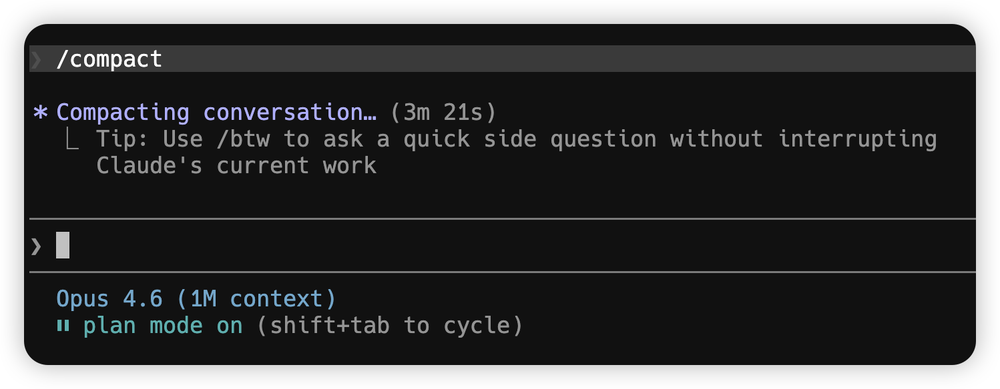
当上下文用了 70% 以上，Claude 就容易顾此失彼。/compact 会把之前的对话压缩成一份摘要，保留关键信息，丢掉冗余的细节，让 Claude 重新「清醒」过来。
/clear：彻底清空对话
/clear
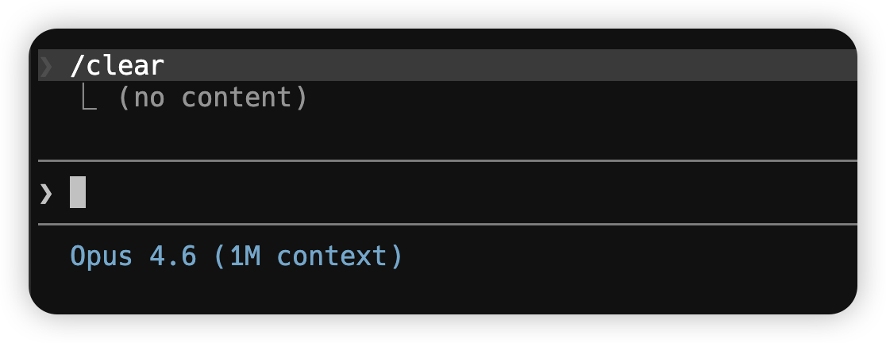
当你接下来的任务跟之前完全不相关的时候，用 /clear 彻底清空对话历史，给 Claude 一个全新的开始。
claude --resume：恢复上次的对话
claude --resume
如果你关掉了终端，下次想继续之前的对话，用这个命令就行。Claude Code 会自动保存每次对话，让你从中选择恢复哪一个。
还有一个更快的版本：
claude --continue
或者
claude -c
直接恢复最近一次对话，省去选择的步骤。
这四个命令的用法总结：
| 命令 | 效果 | 什么时候用 |
|---|---|---|
| /context | 查看上下文占用 | Claude 开始犯迷糊时 |
| /compact | 压缩对话，保留关键信息 | 继续做同一个任务时 |
| /clear | 彻底清空对话 | 切换到完全不同的任务时 |
| claude --resume | 恢复历史对话 | 关掉终端后想接着干时 |
总结
好，10 个课程和相关的核心知识点，小林都给大家讲完了。
如果你打卡完成之后，进度条也直接 100%，所有的课程都会变绿色了。
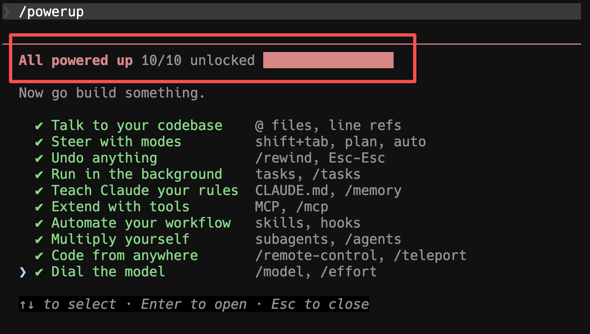
说实话，/powerup 这个功能，是 Anthropic 做的一件特别实在的事情。
Claude Code 功能多，但很多用户只用到了其中一小部分，不是不想用，是不知道怎么用。
/powerup 直接在你的终端里搭了一个「培训班」，10 个课程覆盖了从基础操作到进阶技巧的完整学习路径，每个课程还有动画演示，不用担心看不懂。
对于刚开始接触 Claude Code 的林友来说，/powerup 是最好的入门方式，没有之一。
对于已经用了一段时间的老手来说，/powerup 里也有很多你可能不知道的「隐藏操作」，比如 ! command & 后台运行、Esc+Esc 快速回滚这些，都是很容易被忽略但非常实用的小技巧。
赶紧打开终端，输入 /powerup，开始你的学习之旅吧。
今天分享就到这，我们下篇见！